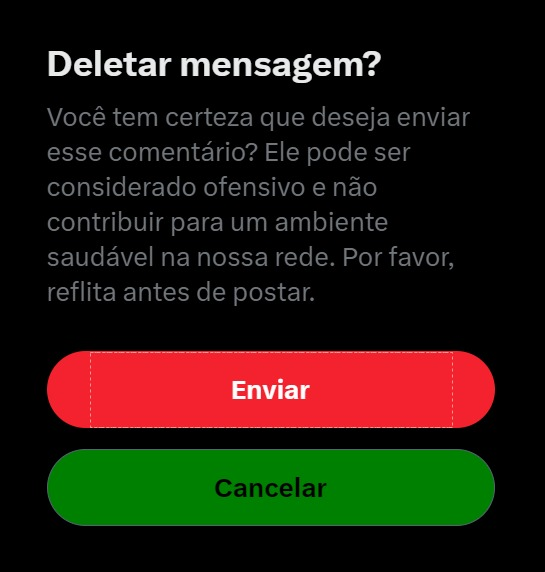

Social Guardian, como funciona?
O Social Guardian é uma inteligência artificial projetada para promover um ambiente saudável e positivo em redes sociais. Sua função é monitorar interações e intervir de maneira proativa quando identifica comportamentos ou comentários ofensivos.
Quando um comentário ofensivo é detectado, o Social Guardian inicia uma conversa privada com o usuário responsável pelo comentário. A abordagem é sempre amigável e compreensiva, com o objetivo de entender melhor a situação do usuário e oferecer suporte.